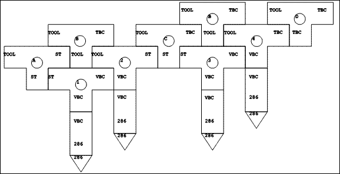
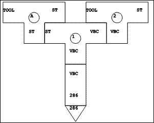
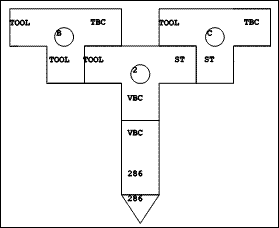
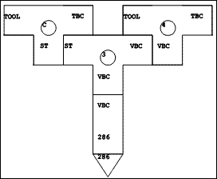
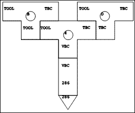
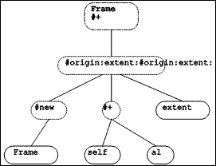
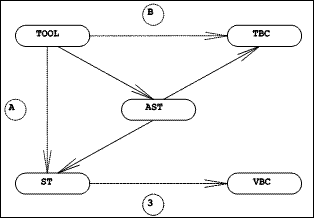
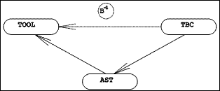
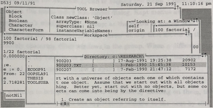

As explained in the previous chapter, the initial set of objects (including classes and methods) had to be created externally to the system. This was accomplished by using another programming system; this is explained in the first section of this chapter. Once this bootstrap process was completed, it became possible to continue the evolution of the system entirely within the system itself.
This process of evolving a working system within itself is similar in spirit to the methodology used for the development of Smalltalk-80, as described by Ingalls (1983). The second section describes the cloning operation, which is accomplished with methods analogous to the Digitalk (1988) "cloner" and the Smalltalk-80 "system tracer" (Ingalls, 1983).
The final sections of this chapter describe the implementation of the TOOL programming language compiler and decompiler, the windowing system, and the programming environment.
The initial set of system objects was created by an application of the fundamental theorem of computer science: Programs are data.
We created the original set of objects using the Digitalk (1988) Smalltalk/V 286 programming language. The bootstrap process (shown in Figure 6.1) shows how we used an implementation of Smalltalk to produce methods written in our byte code set. The diagrams in Figure 6.1 use the Bratman (1961) "T-diagram" as generalized by Earley & Sturgis (1970), to show the bootstrapping steps.
|  |
| Figure 6.1 The bootstrap process: overview |
In the notation of Figure 6.1, a triangle represents a hardware processor, and contains within it the name of its machine language. A rectangle represents an interpreter or virtual machine. Near the bottom, it contains the name of the language in which it is implemented, and near the top it contains the language which it will interpret (that is, the ISP which it implements). When a rectangle is stacked on top of a triangle, we have a working virtual machine. A "T"-shape represents a language translator. The language in which it is written is shown in the bottom arm. Its source language is shown at the left, and its target language at the right. When it is stacked on top of a matching rectangle or triangle, it will be executed and translate its input (which may be either an interpreter, a compiler, or some other function) from its source language into its target language.
The languages involved are: Smalltalk (shown in the diagrams by ST), the Smalltalk/V 286 virtual machine language (shown in the diagrams by VBC for virtual byte codes), the Intel 80286 processor instruction set (286), the TOOL object-oriented language (TOOL), and the byte code set for our virtual machine (TBC for TOOL byte codes).
Two translators had to be hand-crafted. The first of these, written in Smalltalk, translates TOOL source code into Smalltalk source code. This translator is marked with a circled A in Figure 6.1. The second translator, written in TOOL, is a compiler from TOOL source code to the byte code set of our virtual machine (ie. TOOL byte codes). It is marked with a circled B.
The bootstrap process involves the successive execution of four translators.
|  |
| Figure 6.2 The bootstrap process: step one |
The first step translates the TOOL compiler (marked with a circled A in Figure 6.2) into V byte codes, yielding an executable translator from TOOL to Smalltalk (marked with a circled 2 in the figure).
|  |
| Figure 6.3 The bootstrap process: step two |
In the second step, this translator takes the TOOL compiler (marked with a circled B in Figure 6.3) as input and produces the Smalltalk source code for a cross compiler (marked with a circled C in the figure).
|  |
| Figure 6.4 The bootstrap process: step three |
Step three uses the regular Smalltalk compiler (marked with a circled 3 in Figure 6.4) to produce the executable version of the cross-compiler (marked with a circled 4 in the figure). This is a cross-compiler, because it executes on one virtual machine (VBC), but produces code which will only execute on a different virtual machine (in this case, TBC).
|  |
| Figure 6.5 The bootstrap process: step four |
Finally, in step four, the executable cross-compiler is used to compile itself (ie. the compiler marked with a circled B in Figure 6.5) to produce the finished TOOL compiler (marked with a circled D in the figure).
In summary, bootstrapping executes the first of the hand-crafted compilers with the second as input. The result is an automatically generated cross-compiler from TOOL to our virtual machine language, executable on the Smalltalk/V 286 virtual machine. The cross-compiler is marked with a circled 4 in the figures. This cross-compiler is then used to compile itself so that it will run on our virtual machine. This automatically generates the final TOOL compiler, marked with a circled D in the figures. This translator will run only on the TOOL virtual machine, and the bootstrap is complete.
After the bootstrap operation, we began "living in" our system (Ingalls, 1983). From time to time, it was necessary to make a change to the virtual machine. This usually required changes to be made to the file of initial objects. We implemented a cloner to write out the objects of a running system into an object file. Upon completion of the cloning operation, the virtual machine is then able to run using the objects in this output file.
The cloner works by maintaining a queue of objects yet to be cloned. The initial queue consists of all of the objects of which the virtual machine must be aware. For each object in the queue, the cloner writes out its external representation, and adds to the queue the objects to which it refers (assuming they had not already been encountered).
The crux of cloning consists in converting an object from the internal (or memory) format to the external (or disk) format, which is a 32 bit bitstring. Such conversions are accomplished routinely by the virtual machine, but are not required of the high-level code in normal operation. The conversion is accomplished for intrinsic objects by using messages which they understand to compute the external format. Other objects must be looked up in the queue. The crucial method is
cloneFor: a1. Return: (For: a1 class cases: [ Case: Undefined do: [0]. Case: SmallInteger do: [ (If: a1 isNeg: [a1+2147483648] isNotNeg: [a1]) * 2 + 1]. ... Default: [objects add: a1]].
in which it is assumed that the external format of nil is a zero, that small integers are represented externally in the high order 31 bits with the low order bit turned on, and that objects is the queue of objects to be cloned. This queue responds to the #add: message by returning the argument object's external representation. As a side-effect, the argument will be added to the queue if it has not been previously encountered in the cloning operation (so that it will later be cloned itself).
This method has an unusual style, in that it is a case statement based on the class of the argument. Pure object-oriented programming style would require that a send of self cloneFor: anObject be replaced with a send of, say, anObject asClone. Then, the method #asClone would need to be defined in each of the classes which appear in the case construct:
{Undefined>>asClone.
Return: 0.}
{SmallInteger>>asClone.
Return: (If: self isNeg: [self+2147483648]
isNotNeg: [self]) * 2 + 1.}
...
{Object>>asClone.
Return: (objects add: self).}
We explicitly chose not to do this, because we did not wish the cloner to be a permanent part of the system. Rather, when needed, it is filed in and executed. Furthermore, it goes to great pains to avoid including any part of itself in the output file. It was simpler to use a case statement in the core method of the cloner rather than add a method to each of several classes, and then carefully avoid cloning those methods.
The cloner consists of 2 classes and 14 methods (four of which are anonymous methods) containing about 300 lines of TOOL code.
The initial set of objects consists of 22 kernel classes, with 548 methods requiring 3746 lines of TOOL source code (exclusive of comments), and a table of global variables. In addition to these objects, a minimal functional set of objects would include the TOOL programming language implementation, described in the following section.
The first version of the TOOL programming environment was implemented in Smalltalk, and tested using the TOOL to Smalltalk translator. When our virtual machine needed testing, we would use the bootstrap process to produce an initial set of objects (primarily classes and methods). Once the virtual machine was functioning reliably, our development efforts switched to the TOOL programming environment, and we ceased to need Smalltalk.
This section describes the implementation of the three major components of the TOOL programming environment: the compiler, the decompiler, and the program development tools.
Since the design of the TOOL object-oriented language had not been finalized by the time of the bootstrap, we implemented a compiler-compiler in Smalltalk, using techniques described by Aho, Sethi & Ullman (1986), to create tables for a table-driven LR parser (Aho & Johnson, 1974). This allowed us to experiment with several variants of TOOL, and with different grammars. We used the compiler-compiler to create a parser for each language design.
The current version of the parser uses a hand-optimized recursive descent parser. This was not difficult to write, once the syntax of TOOL stabilized, as this syntax is relatively uncomplicated.
The parser produces an abstract syntax tree from the source code. Figure 6.6 shows the abstract syntax tree (AST) for the sample method:
{Frame>>+ a1.
Frame new
origin: self + a1
extent: extent.}
|  |
| Figure 6.6 Sample AST |
An abstract syntax tree consists of a root node for the method (shown with a dashed line), with one subtree for each statement in the method. In this case there is a single statement, consisting of a message send with the selector #origin:extent:. Message send nodes are shown with a dotted line. The left-most child node of each send is the receiver of the message, and the remaining child nodes (if any) are the arguments which the message requires. The leaf nodes of an abstract syntax tree (shown with solid lines) are objects, specified by variables or literal constants. The leaf nodes of the tree in Figure 6.6 are four kinds of variables. From left to right these are: a global variable, a pseudo variable, a method argument, and an instance variable.
Each node in an abstract syntax tree is represented by an object, an instance of the ToolNode class or one of its subclasses. These classes have one set of methods to generate the corresponding Smalltalk source code, and another set of methods to generate the byte codes for our virtual machine. Once the tree has been created by the parser, an appropriate traversal produces either Smalltalk source code or TOOL byte codes.
By using the abstract syntax tree as an intermediate form, we were able to use the same parser for both of the hand-crafted translators required by the bootstrap. The BETA object-oriented programming system takes this idea a step further and uses abstract syntax trees as the principal data structure for representing programs and program fragments (Bak, Knudsen, Madsen, Nþrgaard & Sandvad, 1991).
|  |
| Figure 6.7 The TOOL Compilers |
As shown in Figure 6.7, the translator from TOOL to Smalltalk (the dashed line labelled A) actually uses the TOOL parser to create an abstract syntax tree, then traverses this tree to produce the output. Similarly, the TOOL compiler (labelled B) actually uses the same parser to create an abstract syntax tree, but then traverses the tree differently to generate the TOOL byte codes.
While we were experimenting with the TOOL object-oriented language, the TOOL to Smalltalk translator composed with the standard Smalltalk/V 286 compiler (labelled 3) gave us executable versions of methods written in TOOL. When these methods had been tested, and we had a working TOOL programming environment, the cross-compiler produced the initial set of objects for use with the TOOL virtual machine.
In the TOOL programming environment, source code is not stored in a separate file, as it is in Smalltalk. Rather, the source code of a method is produced on demand by decompiling the method.
|  |
| Figure 6.8 The TOOL Decompiler |
The decompiler was implemented by writing a translator from TOOL byte codes back into an abstract syntax tree. Methods were added to the classes describing nodes in the tree so that a traversal of a tree produces TOOL source code. Figure 6.8 shows a schematic view of the decompiler, showing that it is the inverse of the TOOL compiler (compare with Figure 6.7).
Together, the TOOL compiler, decompiler, and abstract syntax tree nodes are described by 28 classes, with a total of 302 methods, requiring 3152 lines of TOOL source code. Most of these methods assume the presence of the kernel system objects.
The minimal initial set of objects yields a programming environment in which the user can enter a single TOOL expression (of arbitrary complexity), then press the Enter key. At this point, the compiler will be invoked to produce a method from this expression. The method will be executed, resulting in an object. This object will be sent the message #printString, to produce a string containing the printable representation of the object, and this string will be displayed. The programming environment will then await another expression from the user.
There is a TOOL expression which can direct the compiler to file in source code created outside of this programming environment. For example, the command:
File new name: 'window.pkg'; fileIn.
would cause the system to incorporate into itself all of the classes, methods, and other objects described in the TOOL code in the file named WINDOW.PKG in the current directory.
At this point we have a sufficiently powerful environment to meet our requirements. However, it is not yet sufficiently useable. This observation motivated the development of a system of overlapping windows as the foundation of a complete set of programming tools.
A data-oriented application in the TOOL windowing system consists of an object to represent the data (a kind of Model), together with a Window which is tiled with various kinds of Panes. Each pane has its own horizontal and vertical scroll bars if it is not large enough to show its entire contents. Windows and panes can be moved around on the screen and resized by the user, subject to the tiling constraint, for panes.
The windows are visible on the screen and can overlap windows which are behind them. The user of TOOL can organize these windows, which represent applications, onto one or more virtual desktops. One such desktop is shown in Figure 6.9, in which we see a disk browser window (labelled Directory: c:\RESEARCH\) on top of a Workspace, itself on top of a window inspector (labelled Looking at: a Window), which, finally, is on top of a source code browser (labelled: TOOL Browser).
|  |
| Figure 6.9 TOOL windows |
The two browser applications each have three panes. The disk browser window has a list of the subdirectories at the left, a list of the files at the top right, and the text of the currently selected file at the bottom right. The source code browser shows the class hierarchy at the upper left, the methods of the currently selected class at the lower left, and the definition of either the currently selected class or method at the right. An inspector shows the instance variables of the object it is looking at on the left, and a description of the currently selected instance variable on the right. In the figure, the right hand pane of the inspector is showing the form of the workspace window. The workspace consists of a single text pane.
The hardware cursor moves with the mouse (or arrow keys) around the screen. When the user clicks the left mouse button (or presses F12 or Alt-F4) the window on which the cursor is located is activated, and moves to the top, if necessary.
When the user clicks the right mouse button (or presses Alt or Alt-=), a menu window pops up. Which menu depends on the location of the cursor when the menu was called for: menus are context-sensitive. Each pane can have its own menu; the window has a menu which can be called for when the cursor is on its border; and the system menu can be called for when the cursor is on no window.
Menu windows are normally transient in nature, requiring input or dismissal before the user can return to other work. They have their own menu, which includes the option of keeping the menu. Choosing this option changes the menu into a non-modal dialog. Kept menus and their application's window form a group; as the cursor is moved over windows in this group, the window under the cursor at any time moves to the front, possibly obscuring other windows in the group. When a different application is selected (by clicking on its window), the kept menus disappear, until the original application's window is again brought to the front.
In addition to bringing windows to the front by clicking on them, the system implements cycling from one application window to the next by clicking on the middle mouse button (or pressing F9). In addition, the system menu includes an option to create a pop up list of windows, and each window menu has an option to bury the window (ie. move it to the bottom, or next in cycling order).
Besides all of this, the windows are organized into separate, named desktops, and the user can move between desktops by pressing Shift-F3 or selecting a desktop from the system console (itself requested from the system menu).
Thus, the user has complete control over the organization of their desktops. This extends into the ability to specify the colors in which each application window will be displayed.
The programming environment as seen by a user of TOOL, in its current form, consists of multiple overlapping windows representing data-oriented applications whose data include the class and method hierarchy of the system itself. These applications include various kinds of source code browsers, object inspectors, a debugger, a workspace, and a disk file browser.
The compiler is available in every text pane. TOOL code can be typed in, highlighted and executed, evaluated, or inspected. In all three cases it is compiled and executed. In the case of evaluation, the object returned by the last statement is sent the message #printString, to produce a string containing the printable representation of the object. This string is then inserted into the text pane. In the case of inspection, the object returned by the last statement becomes the subject of an object inspector.
We elected to have each window cache its own form in an instance variable. Changes in a pane, whether due to scrolling or model changes, are communicated to the window, which incorporates these into its form, clipping as necessary, then passes a request to the desktop object to refresh the required area of the screen (clipping it as needed, if the window is partially obscured by windows above it).
Bringing a window to the top of the screen requires simply redrawing its form on the screen. When a desktop needs to be completely redrawn (as when the user switches desktops), the system begins with a display list containing the entire screen and traverses the windows from front-most to farthest back, drawing each in the display list, and carving the portions of the screen it used out of the display list. In this way, the user sees the front window first, and can concentrate on that while the system refreshes the rest of the screen around it.
Input events are sent (by the interpreter) to whatever object happens to have the focus. Each input event results in a message to the (referent of the global variable named) Focus, which either executes an appropriate method or forwards the message to its container object: panes forward to windows, which forward to desktops, which forward to Tool (the system object). This means that two kinds of inheritance are at work: class inheritance, in which a particular kind of pane might not recognize a message, and so the interpreter will check its superclass; and aggregation inheritance, in which a method may delegate the message to its container object.
For example, the method for the message #switch (sent when the user presses Shift-F3) exists only in desktop objects. If the cursor was over a text pane when the user pressed Shift-F3, that text pane would be the Focus object, and its class would not implement a method for #switch. However, the class Pane, the superclass of all kinds of pane, has the method:
{Pane>>noMethodFor: a1 withArgs: a2.
Return: (window withArgs: a2 execute: a1).}
and the class Window, the superclass of all kinds of window, has the method:
{Window>>noMethodFor: a1 withArgs: a2.
Return: (desktop withArgs: a2 execute: a1).}
so that finally, the method for #switch in the desktop class will be executed.
The windowing system and the programming environment applications together consist of 47 classes, 726 methods, with about 6500 lines of TOOL source code.
Copyright © March 8, 1995 Bruce Conrad